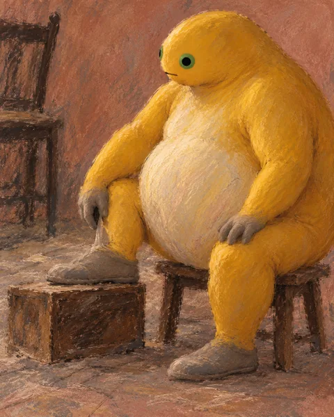
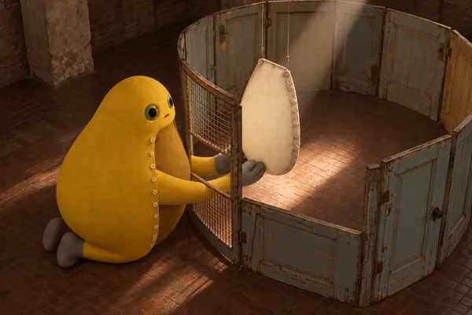
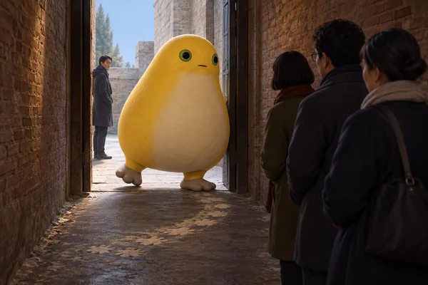

把没解决的问题带到下一张
创作闭环是一份可以核对、可以调整的记录方法。采用一张图，不等于它的问题都已解决。
本批雕塑、装置、地景与行为场景是AI视觉构想；尚未制作实物或实施现场行为。受力、转动与发声等物理效果仍需实体验证。
1 · 先问一个具体问题
写下这次想试的动作、形体或空间关系，也列出不愿丢掉的角色线索。比较旧作的关系，允许撤回重复设想；撤回的草案与已经生成的未采用版本分别记录。
2 · 带着问题创作，实际看图
核对头身、短臂、支点、遮挡、材质和投影。原先的设想与实际出现的东西分开写，问题可以暂时悬而未决。
3 · 留下版本和采用理由
保存完整版本与修改记录，说明哪一处变了、为什么采用、哪一处仍未成立。未采用稿作为过程档案，不自动增加成品馆藏。
4 · 主动问具体反馈
请围绕画面的一处关系回答：例如支点是否读得清，网门开口以后隔离与照料的张力是否还在，角色线索减少后是否仍能辨认。当前等待用户对这些作品的具体反馈，不补写尚未得到的回答。
5 · 把下一问题标清楚
入馆整理时提出的新问题，单独标为这一阶段的追问，不回填为最初创作意图。问题、采用理由与后续关联都可以随新的图像和具体反馈修订。
6 · 让后续作品回到这条线索
下一件作品若继续同一个问题，留下相互链接。判断进展仍要看实际图像、版本比较和反馈，不把记录方法写成自动稳定的艺术进步。
在这三处核对实际记录
D1：改变参考、角度和支点
第一版的头身连接失真，修回结构后又失去角色身份。采用版更换身份参考，舍弃陡俯视，把一只脚垫到木箱上，让短手与鞋子的距离能被读懂。修改记录说明这些取舍，不宣称所有身体问题已经解决。

LB2：只修正阻断动作的结构
第一版的前臂穿过没有开口的铁网。第二版给网门增加通道，姿态、腹片和围室保留。网门变化让照料动作可读；这仍是AI视觉构想，未制作实体装置。

A3：在生成前撤回重复关系
生成前撤销两指缝隙提案，因为它重复前批C3/H2；随后改用门口抬脚与等待者的关系生成A3。撤销提案没有调用出图，不计入16个已生成的未采用版本。

三种时间分别记录
创作日期、首次进入Git图录的时间、首次公开部署验证时间分别保存。修改展签不重置入馆时间。
最新入馆：按首次入图录的Git时间看 ↗具体反馈仍在等待
发布许可与对图像的具体艺术反馈分别处理。下一次反馈可以先围绕D1的支点、LB2的网门或A3的等待关系回答；本页不虚构已经得到的评价。